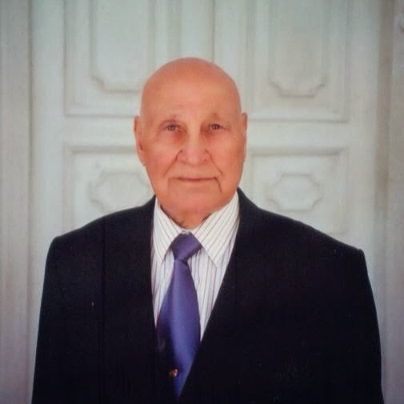
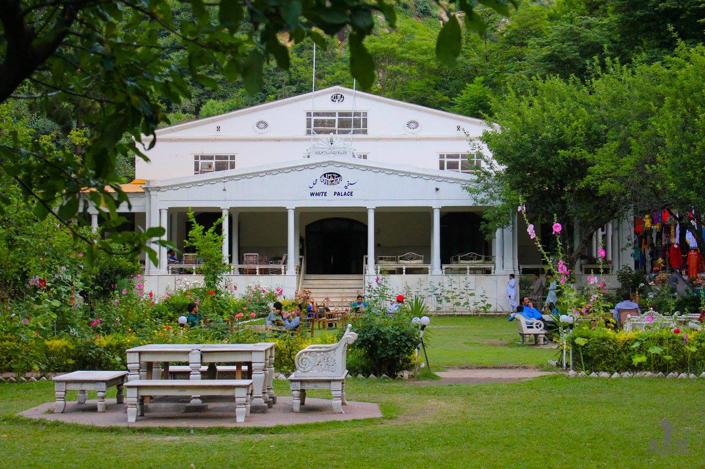

Times
Swat, Pakistan
clock
Local, England
clock
Swat is a valley and an administrative district in KPK, Pakistan
Swat valley is one of the major tourist attractions of Pakistan. It is known as the Switzerland of Pakistan. The valley has one of the oldest civilizations history and one of the beautiful scenery one could ever see. Swat is located in the foothills of Hindukush mountain range and is part of the Khyber Pakhtunkhwa (KPK) Pakistan. The location of Swat valley has a major strategic importance as it lies in the region where South Asia, Central Asia and China meet. From March until October, Swat has the best season for tourism. The valley welcomes the people through its magnificent mountains, lush green forests, running streams and meadows.Some of the major languages spoken in the Swat valley area are Pushto and Kohistani. Nowadays Urdu and English are also spoken by the locals. its magnificent mountains, lush green forests, running streams and meadows.Some of the major languages spoken in the Swat valley area are Pushto and Kohistani. Nowadays Urdu and English are also spoken by the locals.
Below are two notable people from Valley Swat

Malala Yousafzai
Mia Gul Aurangzeb
Tourism
Swat had a thriving economy based on eco-tourism till just a few years ago. Foreigners and locals alike would visit Swat for its glacial lakes, trout fishing and mountain climbing for extremely affordable prices. Most of the local Pashtuns were directly or indirectly employed by the tourism industry. The Pakistsn Tourism Development Corporation (PTDC) had developed numerous holiday resorts in each of the tourist sites in the Valley which were very well maintained.

Queen Elizabeth II in Swat (1961)
A rare photograph of Queen Elizabeth II visiting Swat during her visit to Pakistan in 1961. She is flanked by Prince Philip, who accompanied her during the visit, and Miangul Jehanzeb Khan, the last Wali of Swat. Urdu writer and bureaucrat Qudratullah Shahab looks on from behind them. It was during this visit that the Queen made her famous comment calling Swat “The Switzerland of the East”.
Find out More